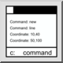

Это автоматический перевод.
Панель инструментов / Иконка:

Меню: Просмотр > Командная строка
Горячая клавиша: G, M
Команды: gm
Командная строка QCAD позволяет запускать команды, вводить координаты или вводить такие значения, как расстояния или радиусы.
Абсолютные координаты вводятся в формате "x,y"
40,5
Относительные координаты вводятся в формате "@x,y"
@10,6
Абсолютные полярные координаты вводятся в формате "distance<angle"
10<30
Координаты относительной полярности вводятся в формате "@distance<angle"
@10<45
При вводе координат или значений можно использовать математические выражениядля вычисления координат на основе известных значений. Например, координату 10,5 можно ввести также как
5+5,30/6
Командная строка также может использоваться в качестве калькулятора. Для этого введите математическое выражение ''математическое'', сопровождаемое знаком равенства
=3+4
7
Переменные могут использоваться для хранения значений
=a=5+6
11
=a/2
5.5
Доступны следующие математические константы:
PI, LN2, LN10, LOG2E, LOG10E, SQRT1_2, SQRT2, SQRT2
Математические функции доступны:
пресс, потолок, пол, логотип, логотип, max, min, pow, sqrt, random, round, round, Rad2deg, deg2rad, sin, cos, tan, asin, acos, atan, atan, atan2, log10, log1p, log2, sign, cosh, sinh, tanh, acosh, asinh, atanh, expm1, trot, cbrtunc
Большинство этих констант и функций являются стандартными функциями ECMAScript (JavaScript) и документируются онлайн. В стандартном ECMAScript эти функции являются частью класса Math, поэтому функция absдолжна быть написана как Math.abs.В командной строке QCAD для удобства можно оставить часть Математикав стороне .Тригонометрические функции (грех, коса, загар, асин, аккос, атон, атан2) принимают или возвращают углы в градусах. Если вы предпочитаете радианную версию этих функций, используйте вместо них оригинальные функции Math.
Функции Rad2degи deg2deg могут быть использованы для преобразования углов между радианом и градусами.